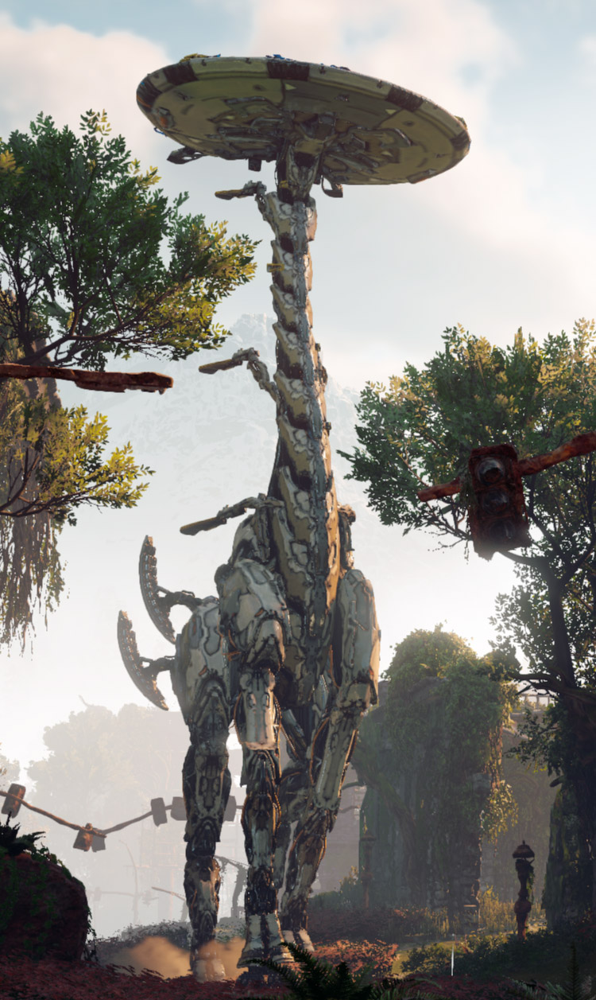

HORIZON ZERO DAWN
Since being founded in 2000, this Amsterdam-based studio has stuck almost entirely to a single series: the drab sci-fi shooter franchise Killzone. The successes and failures of individual entries in that franchise have varied — 2009's Killzone 2 was arguably a high point, while PlayStation 4 launch title Killzone: Shadow Fall was a disappointment — but regardless, Killzone has never really seemed to catch on in the gaming zeitgeist compared to popular competitors like Halo and Call of Duty.
It seemed like Guerrilla Games might be trapped churning out Killzone games forever until the surprise announcement of Horizon Zero Dawn at E3 2015. Here was something stunningly different from the moody, dark shooter heritage of this team: a gorgeous, colorful, third-person open-world game that focused on tracking and hunting massive robotic beasts. Could they really do this?
The answer is yes. Horizon Zero Dawn is a refreshing change of pace for Guerrilla Games. While playing it, I couldn't shake the feeling that this game was made by people excited to be working on it, and that excitement was contagious.
Honestly, the only notably mundane moments in Horizon are the points where the game makes you fight against other humans, which happens just a little too often during the main quest. Where each type of robot requires unique strategies and a strong sense of your surroundings to succeed, fights against humans feel like far less interesting resource and skill checks. Can you quickly aim at enemies' heads to bring them down in one or two arrows, rather than the dozen or so body shots necessary? And if not, do you have enough health potions to survive as the opposing humans pelt you with arrows? Then you're all good; not much else to it.